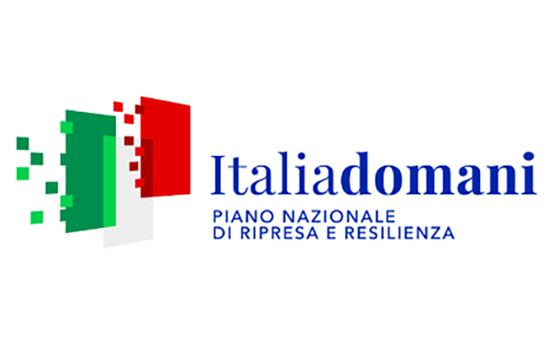
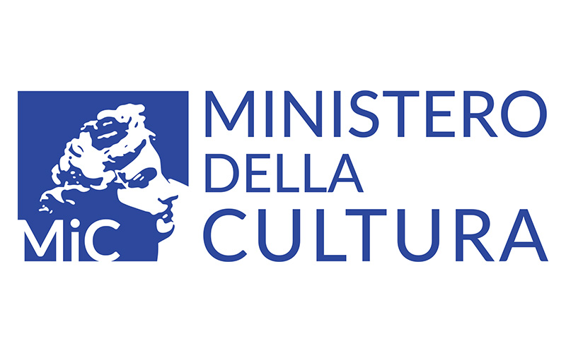
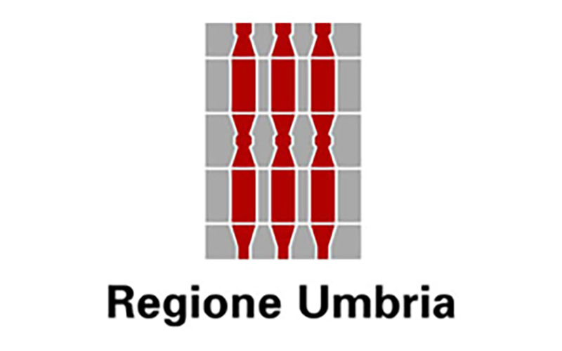
L'azienda Agricola IANVS ha partecipato all'Avviso pubblico (D.D. n. 3732 del 14/04/2022) della Regione Umbria - Direzione Regionale Risorse, Programmazione, Cultura e Turismo per la selezione degli interventi da ammettere a finanziamento nell'ambito delle risorse stanziate dal PNRR “Turismo e Cultura” (M1.C3) dedicata alla “Protezione e valorizzazione dell'architettura e del paesaggio rurale.”
Il progetto presentato prevede l'intervento di ristrutturazione di un fabbricato rurale, censito nell'elenco dei beni culturali sparsi del Comune di Giano dell'Umbria, nella categoria residenze di campagna, edilizia rurale storica e tipica, tipologicamente ricorrente sul territorio, che non avendo subito interventi in epoca recente presenta, insieme ad elementi di particolare pregio e qualità storico-artistica, un sistema organico e prevalentemente integro per materiali, tecniche costruttive, tipologia architettonica e decorativa tali da prescriverne la tutela dei suoi caratteri stilistici.
L'intervento ammesso a finanziamento prevede il consolidamento di parte del fabbricato reintegrandone la stabilità statica, anche nell'osservanza delle vigenti norme per le costruzioni in zona sismica, nonché il necessario assetto funzionale ai fini della realizzazione al piano terra di un percorso didattico.
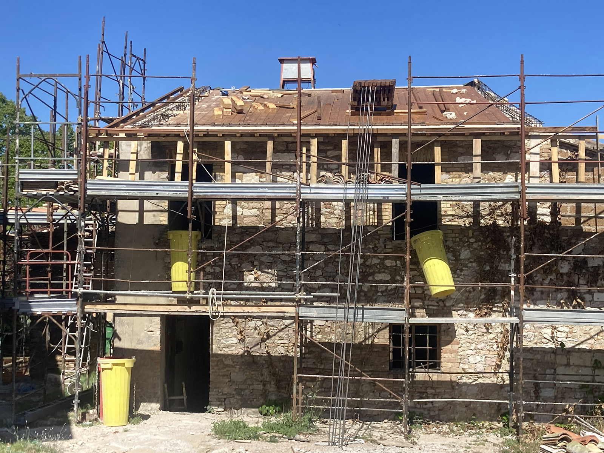
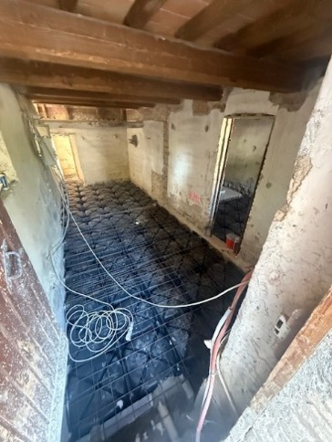
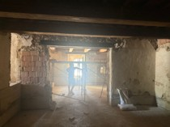
Il percorso permette ai fruitori un'esperienza immersiva di visualizzazione di strumenti antichi per la vinificazione, la produzione di olio di oliva e la lavorazione dei cereali. Le antiche macchine ed i dispositivi manuali sono stati restaurati per permettere un esperienza tattile ai visitatori ipo-vedenti e non vedenti. Tutta la cartellonistica è dotata di QR code con link a filmati multimediali e descrizioni audio accessibili attraverso indicazioni in braille.
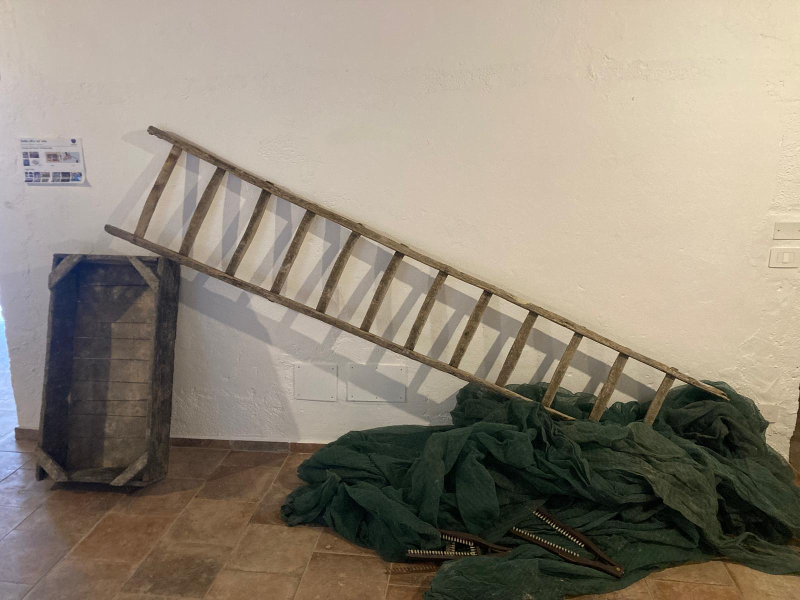
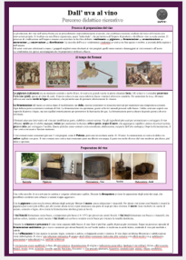
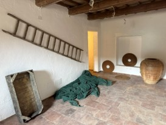
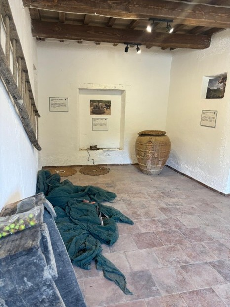
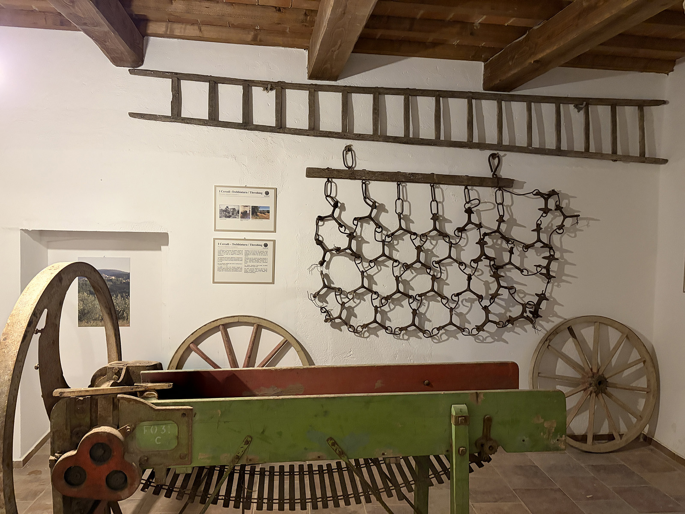
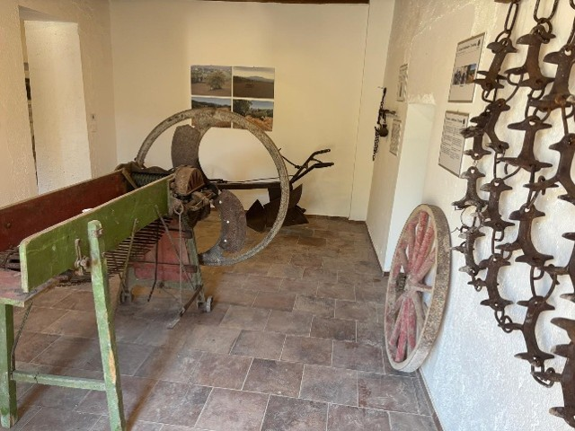
Per prenotare una visita si prega di inviare una mail a info@ianvs.it indicando il giorno, il numero di visitatori e l'eventuale presenza di visitatori con disabilità motorie. Per una fruizione ottimale il numero massimo di visitatori contemporanei è pari a 5.